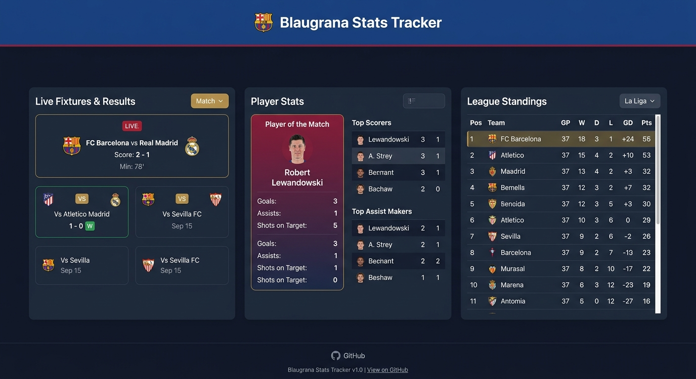
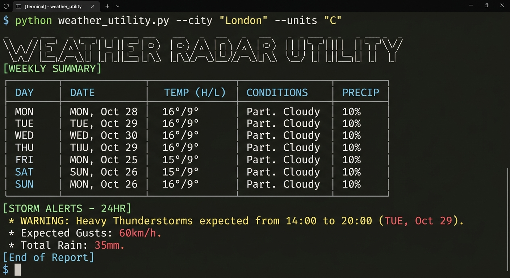
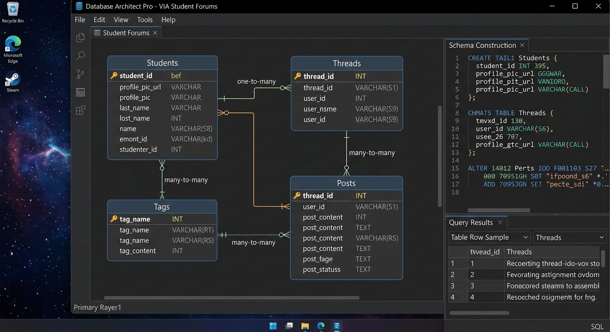
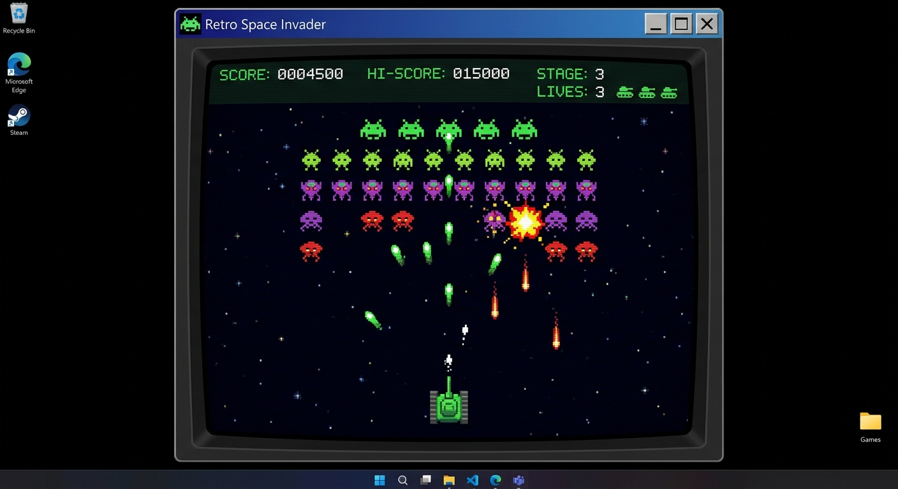

TaskFlow Manager
A desktop Kanban board application designed to help students organize tasks, track assignment deadlines, and manage study schedules effectively.
Technologies: Java, JavaFX, Object-Oriented Programming
View Project →A showcase of the software, tools, and applications I have developed.
A desktop Kanban board application designed to help students organize tasks, track assignment deadlines, and manage study schedules effectively.
Technologies: Java, JavaFX, Object-Oriented Programming
View Project →
A web application that fetches live match fixtures, player stats, and league standings specifically for FC Barcelona fans, featuring an interactive data view.
Technologies: HTML5, CSS3, JavaScript, REST APIs
View Project →
A command-line script that processes raw JSON meteorological data and presents structural, clean weekly summaries and storm alerts for any chosen city.
Technologies: Python, JSON Parsing, Command-Line Interface
View Project →
A relational backend system constructed to support user profiles, forum threads, responses, and category tags for an educational community platform.
Technologies: SQL, Relational Databases, Schema Architecture
View Project →
A 2D top-down arcade tactical shooting game built to master basic algorithmic collision mechanics, state management, and asset rendering loops.
Technologies: C#, Game Loop Architecture, Object Physics
View Project →